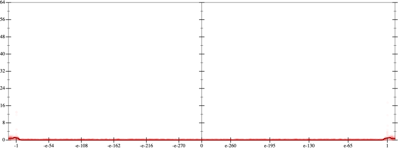
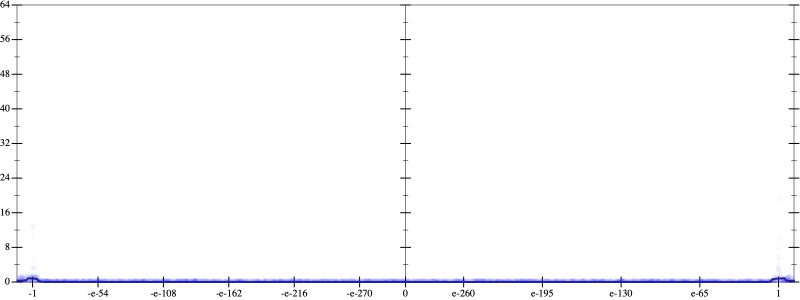
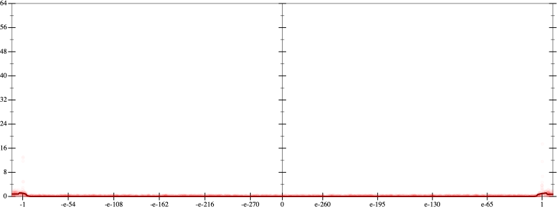
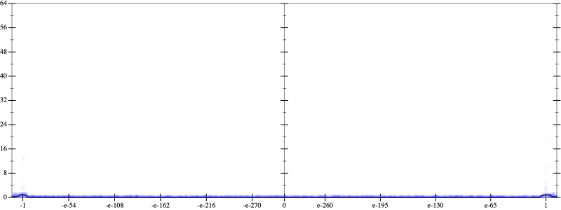

Initial program 0.1
\[\left(\left(\left(\left(\left(\left(-0.209473 + 21.994629 \cdot \left(x \cdot x\right)\right) + -373.908691 \cdot \left(\left(\left(x \cdot x\right) \cdot x\right) \cdot x\right)\right) + 2368.088379 \cdot \left(\left(\left(\left(\left(x \cdot x\right) \cdot x\right) \cdot x\right) \cdot x\right) \cdot x\right)\right) + -7104.265137 \cdot \left(\left(\left(\left(\left(\left(\left(x \cdot x\right) \cdot x\right) \cdot x\right) \cdot x\right) \cdot x\right) \cdot x\right) \cdot x\right)\right) + 10893.206543 \cdot \left(\left(\left(\left(\left(\left(\left(\left(\left(x \cdot x\right) \cdot x\right) \cdot x\right) \cdot x\right) \cdot x\right) \cdot x\right) \cdot x\right) \cdot x\right) \cdot x\right)\right) + -8252.429199 \cdot \left(\left(\left(\left(\left(\left(\left(\left(\left(\left(\left(x \cdot x\right) \cdot x\right) \cdot x\right) \cdot x\right) \cdot x\right) \cdot x\right) \cdot x\right) \cdot x\right) \cdot x\right) \cdot x\right) \cdot x\right)\right) + 2448.522949 \cdot \left(\left(\left(\left(\left(\left(\left(\left(\left(\left(\left(\left(\left(x \cdot x\right) \cdot x\right) \cdot x\right) \cdot x\right) \cdot x\right) \cdot x\right) \cdot x\right) \cdot x\right) \cdot x\right) \cdot x\right) \cdot x\right) \cdot x\right) \cdot x\right)\]
Applied simplify0.1
\[\leadsto \color{blue}{\left(\left(\left(\left(x \cdot x\right) \cdot \left(x \cdot x\right)\right) \cdot \left(\left(\left(x \cdot x\right) \cdot \left(x \cdot x\right)\right) \cdot \left(\left(x \cdot x\right) \cdot \left(x \cdot x\right)\right)\right)\right) \cdot \left(x \cdot \left(x \cdot 2448.522949\right) + -8252.429199\right) + \left(\left(\left(x \cdot 21.994629\right) \cdot x + -0.209473\right) + \left(\left(x \cdot x\right) \cdot \left(x \cdot x\right)\right) \cdot \left(-373.908691 + x \cdot \left(2368.088379 \cdot x\right)\right)\right)\right) + \left(\left(\left(x \cdot x\right) \cdot \left(x \cdot x\right)\right) \cdot \left(\left(x \cdot x\right) \cdot \left(x \cdot x\right)\right)\right) \cdot \left(10893.206543 \cdot \left(x \cdot x\right) + -7104.265137\right)}\]
Taylor expanded around inf 0.0
\[\leadsto \left(\color{blue}{\left(2448.522949 \cdot {x}^{14} - 8252.429199 \cdot {x}^{12}\right)} + \left(\left(\left(x \cdot 21.994629\right) \cdot x + -0.209473\right) + \left(\left(x \cdot x\right) \cdot \left(x \cdot x\right)\right) \cdot \left(-373.908691 + x \cdot \left(2368.088379 \cdot x\right)\right)\right)\right) + \left(\left(\left(x \cdot x\right) \cdot \left(x \cdot x\right)\right) \cdot \left(\left(x \cdot x\right) \cdot \left(x \cdot x\right)\right)\right) \cdot \left(10893.206543 \cdot \left(x \cdot x\right) + -7104.265137\right)\]
Applied simplify0.0
\[\leadsto \color{blue}{\left(\left({x}^{14} \cdot 2448.522949 - 8252.429199 \cdot {x}^{12}\right) + \left(x \cdot \left(2368.088379 \cdot x\right) + -373.908691\right) \cdot \left(\left(x \cdot x\right) \cdot \left(x \cdot x\right)\right)\right) + \left(\left(-0.209473 + x \cdot \left(21.994629 \cdot x\right)\right) + {\left(x \cdot x\right)}^{\left(3 + 1\right)} \cdot \left(-7104.265137 + x \cdot \left(10893.206543 \cdot x\right)\right)\right)}\]
- Using strategy
rm Applied flip-+0.0
\[\leadsto \left(\left({x}^{14} \cdot 2448.522949 - 8252.429199 \cdot {x}^{12}\right) + \color{blue}{\frac{\left(x \cdot \left(2368.088379 \cdot x\right)\right) \cdot \left(x \cdot \left(2368.088379 \cdot x\right)\right) - -373.908691 \cdot -373.908691}{x \cdot \left(2368.088379 \cdot x\right) - -373.908691}} \cdot \left(\left(x \cdot x\right) \cdot \left(x \cdot x\right)\right)\right) + \left(\left(-0.209473 + x \cdot \left(21.994629 \cdot x\right)\right) + {\left(x \cdot x\right)}^{\left(3 + 1\right)} \cdot \left(-7104.265137 + x \cdot \left(10893.206543 \cdot x\right)\right)\right)\]
Applied associate-*l/0.0
\[\leadsto \left(\left({x}^{14} \cdot 2448.522949 - 8252.429199 \cdot {x}^{12}\right) + \color{blue}{\frac{\left(\left(x \cdot \left(2368.088379 \cdot x\right)\right) \cdot \left(x \cdot \left(2368.088379 \cdot x\right)\right) - -373.908691 \cdot -373.908691\right) \cdot \left(\left(x \cdot x\right) \cdot \left(x \cdot x\right)\right)}{x \cdot \left(2368.088379 \cdot x\right) - -373.908691}}\right) + \left(\left(-0.209473 + x \cdot \left(21.994629 \cdot x\right)\right) + {\left(x \cdot x\right)}^{\left(3 + 1\right)} \cdot \left(-7104.265137 + x \cdot \left(10893.206543 \cdot x\right)\right)\right)\]
 
